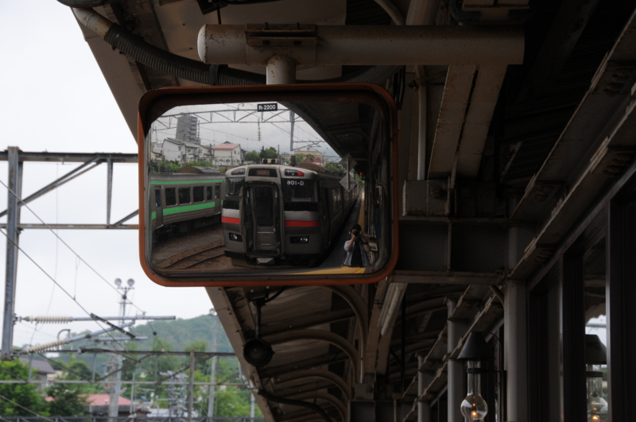
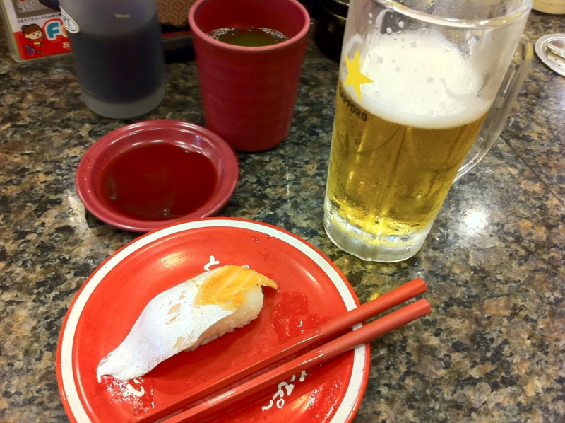
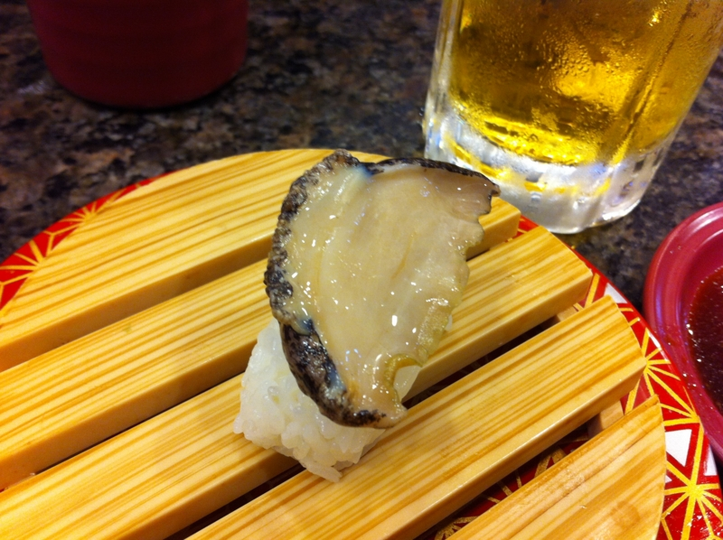
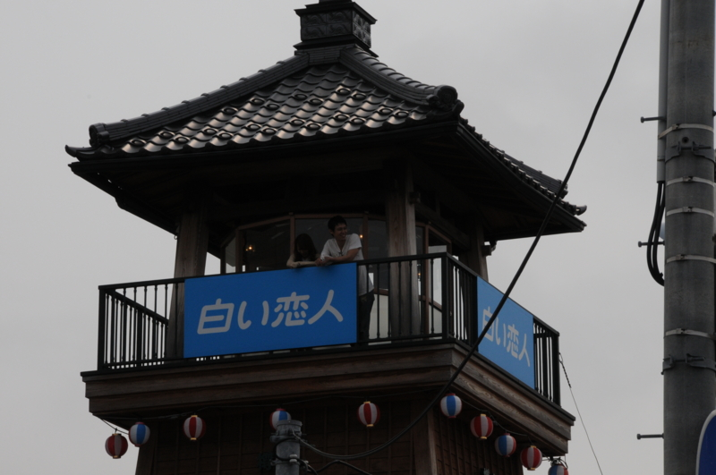
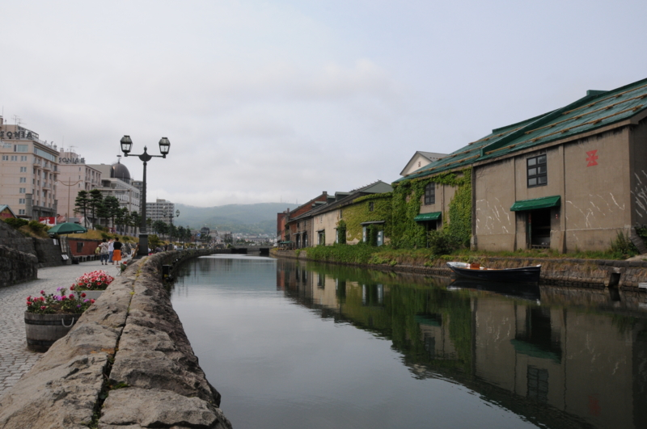
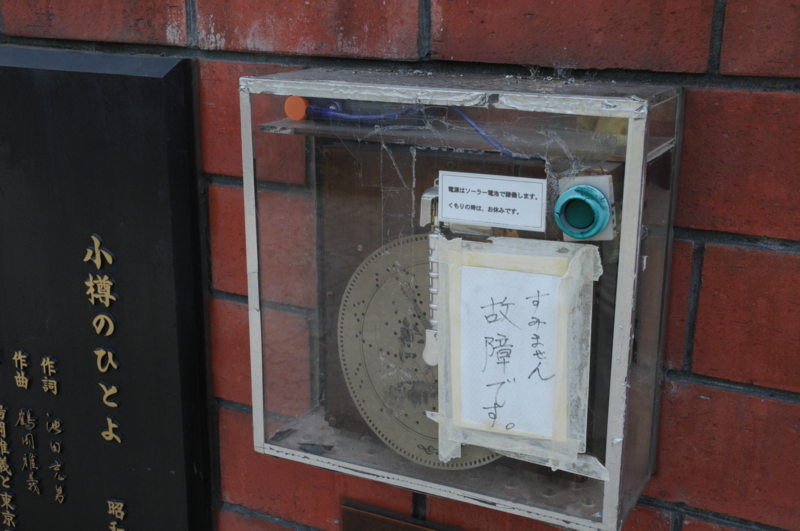
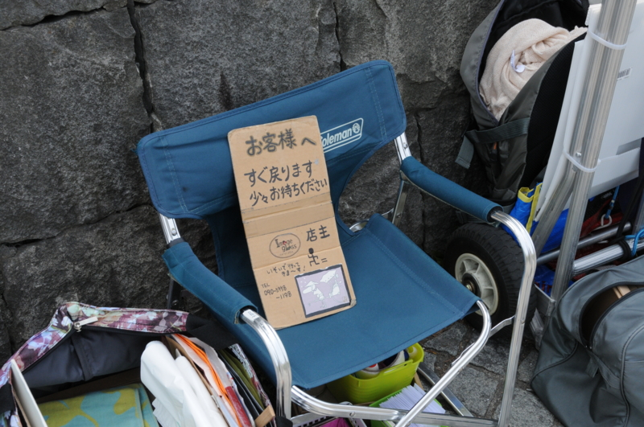
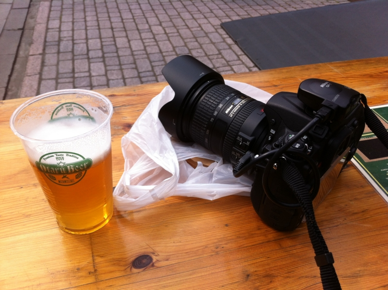
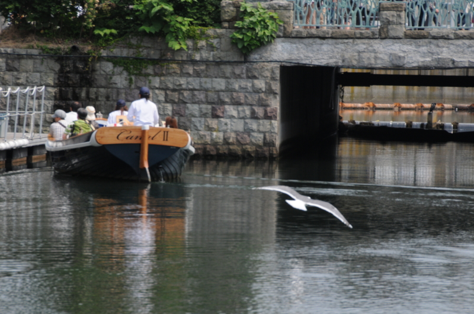
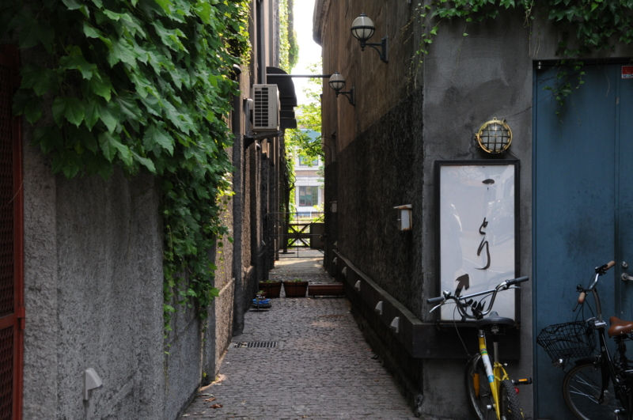

小樽でだるだるした。
公開日：

札幌に行くついでに、小樽にも行って来ました。札幌＝小樽間は40分程度。実はそんなに離れていないんだね！
10時に札幌市内のホテルを出て、クラーク像と時計台を見たので、小樽についたのは1時頃。飛行機は6:30発なので、4時間ぐらいしかいられなかった*1。朝ごはんすら食べていなかったので、まずは腹ごしらえ。タクシーの運転手さんに「運河の近くでお寿司が美味しいところ！」と注文したら、「観光客向けのところばかりだけど、回転寿司でもいいならココが一番美味しい」と紹介してもらったのがココ。

人気店らしくて、すごい混雑。のんびりしたかったし、もうちょっと高いところに行ってもよかったかなぁ、と思ったけど、まぁ、普通に美味しかったのでよし。お会計は3000円弱で、ビールがぶ飲みした割にはお安かった。

あとは、運河の周りをのんびりのんびり。おみやげに絵を買ったり、かまぼこ買ったりして過ごしました。途中、三時のおやつに小樽ビールを飲んでたら、道行く人にいちいち「みて！ ビール飲んでるよ！」って言われるのだけがちょっと気まずかった。
*1:ちなみに、小樽＝新千歳空港は1時間20分ぐらいです